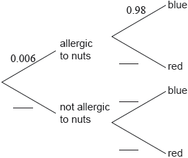

A company performs an experiment on the efficiency of a liquid that is used to detect a nut allergy.
A group of 60 people took part in the experiment. In this group 26 are allergic to nuts. One person from the group is chosen at random.
A second person is chosen from the group.
When the liquid is added to a person’s blood sample, it is expected to turn blue if the person is allergic to nuts and to turn red if the person is not allergic to nuts.
The company claims that the probability that the test result is correct is 98% for people who are allergic to nuts and 95% for people who are not allergic to nuts.
It is known that 6 in every 1000 adults are allergic to nuts.
This information can be represented in a tree diagram.

An adult, who was not part of the original group of 60, is chosen at random and tested using this liquid.
The liquid is used in an office to identify employees who might be allergic to nuts. The liquid turned blue for 38 employees.
Find the probability that both people chosen are not allergic to nuts.
Copy and complete the tree diagram.
Find the probability that this adult is allergic to nuts and the liquid turns blue.
Find the probability that the liquid turns blue.
Find the probability that the tested adult is allergic to nuts given that the liquid turned blue.
Estimate the number of employees, from this 38, who are allergic to nuts.